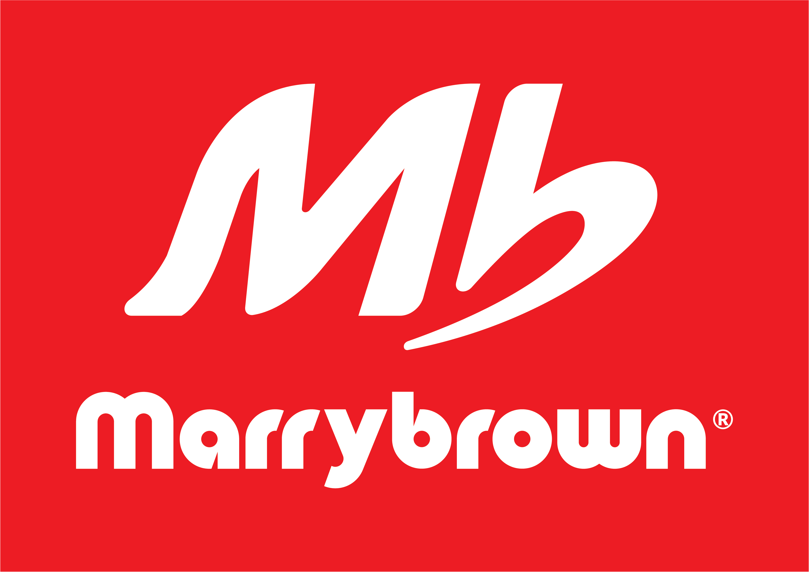

MARRYBROWN RESTAURANT
PART TIME WAITER
In early 2021, during the semester break in March, I took the initiative to earn some pocket money during the semester break, so I got a job offer at Marrybrown Star Parade, Alor Setar Kedah on March 1, 2021 until October 5, 2021. Due to the covid pandemic -19, I take the opportunity to work while studying, this is because of online learning so I can divide class time and also working time. While working, I was trained in fast food handling, taking orders as well as delivering delivery orders such as Foodpanda and Grabfood. I was also trained to prepare burgers and even marrybrown fried chicken.